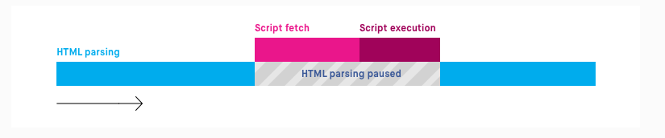

DOM(Document Object Model)은 프로그래머 관점에서 바라본 HTML로 HTML 요소를 Object처럼 조작할 수 있는 모델이다.
DOM은 브라우저 환경에서 JS를 이용해 HTML 문서에 이미 작성되어 있는 엘리먼트에 접근하거나 새로운 엘리먼트를 생성 또는 삭제하여 HTML을 조작할 수 있다.
script 요소를 추가하는 대표적인 방법은 <head> 태그에 추가하는 방법 또는 <body> 태그에 추가하는 방법이다.
<head> 태그에 추가하는 방법과 <body> 태그에 추가하는 방법의 차이는 웹 브라우저가 코드를 해석하는 과정에서 다르다.
웹 브라우저가 작성된 코드를 해석하는 과정에서 script 요소를 만나면 웹 브라우저는 HTML 해석을 잠시 멈추고 script 요소를 먼저 실행한다.

즉, script 요소가 <head> 태그 안에 있으면 <body> 태그 부분의 HTML 요소들을 해석하기 전에 script 요소가 실행되어 개발자가 의도하지 않은 상황이 발생할 수 있다.
그렇다고 무조건 <body> 태그에 script 요소를 넣는 것도 좋은 방법은 아니다.
script 내용이 크고 HTML 요소에 직접적으로 작동하는 코드가 아니라고 가정하면 <body> 태그보다 <head> 태그 안에 script 요소를 넣는 것이
속도면에서 더 좋을 것이다.
document 객체는 웹 페이지 그 자체를 의미하며 웹 페이제이 존재하는 HTML 요소에 접근하고자 할 때는 반드시 document 객체부터 시작해야 한다.
새로운 HTML 요소를 생성하기 위해 제공되는 메서드이다.
document.createElement("<element>")
특정 요소에 하나 또는 여러개의 요소나 문자열을 추가할 수 있는 메서드이다.
document.<element>.append(<element>)
or
document.<element>.append("<DOM_string>")
HTML 요소 중 해당 셀렉터와 일치하는 첫 번째 요소를 반환한다.
document.querySelector("<selector>")
HTML 요소 중 해당 셀렉터와 일치하는 모든 요소를 NodeList로 반환한다.
NodeList는 Array는 아니지만 Array처럼 for문이나 forEach()를 사용하여 반복할 수 있다.
document.querySelectorAll("<selector>")
HTML 요소 중 해당 태그명과 일치하는 모든 요소를 HTMLCollection으로 반환한다.
HTMLCollection는 Array는 아니지만 Array처럼 for문이나 forEach()를 사용하여 반복할 수 있다.
document.getElementsByTagName("<HTML_tag_name>")
HTML 요소 중 해당 아이디와 일치하는 요소를 반환한다.
document.getElementById("<id>")
HTML 요소 중 해당 class명과 일치하는 모든 요소를 HTMLCollection으로 반환한다.
document.getElementsByClassName("<class_name>")
HTML 요소 중 해당 name 값과 일치하는 모든 요소를 NodeList로 반환한다.
document.getElementsByName("<name>")
textContent는 해당 요소가 가지고 있는 텍스트 값을 가져오거나 텍스트 값을 입력하여 변경할 수 있다.
<element>.textContent
or
<element>.textContent = "<string>"
innerText는 해당 요소가 가지고 있는 텍스트 값을 가져오거나 텍스트 값을 입력하여 변경할 수 있다.
<element>.innerText
or
<element>.innerText = "<string>"
innerHTML은 해당 요소 내에 포함 된 HTML 또는 XML 마크업을 가져오거나 설정할 수 있다.
<element>.innerHTML
or
<element>.innerHTML = "<string>"
id는 해당 요소의 id 속성의 값을 가져오거나 설정할 수 있다.
<element>.id
or
<element>.id = "<string>"
className은 해당 요소의 클래스 속성의 값을 가져오거나 설정할 수 있다.
<element>.className
or
<element>.className = "<string>"
classList는 해당 요소의 클래스 속성의 DOMTokenList를 반환하는 읽기 전용 프로퍼티이다.
<element>.classList
classList는 add 와 remove 메서드를 사용하여 클래스의 값을 추가하거나 삭제할 수 있다.
해당 요소에 지정한 클래스 값을 추가한다.
<element>.classList.add("<class_name>")
해당 요소에 지정한 클래스 값을 제거한다.
<element>.classList.remove("<class_name>")
해당 요소에서 지정한 속성의 속성값을 추가한다.
<element>.setAttribute("<attribute_name>", "<attribute_value>")
해당 요소를 제거한다.
<element>.remove()
해당 부모 노드에 지정한 자식 노드가 존재하는 경우 자식 노드를 제거하고 제거된 노드를 반환한다.
<parent_node>.removeChild(<child_node>)
사용자가 마우스를 움직이거나 요소를 클릭 또는 텍스트 박스에 글을 쓰는 등 수많은 종류의 동작들이 모두 이벤트이다.
즉, 웹 브라우저에서 HTML 요소에 대한 사건의 발생을 의미한다.
이벤트 속성에는 수 많은 종류가 있으며 이벤트 속성명 앞에 on을 붙여서 사용한다.
여기에서는 자주 사용하는 이벤트 속성에 대해서만 정리하였다.
요소의 값이 변경 될 때 발생하는 이벤트 속성이다.
요소가 focus를 받을 때 발생하는 이벤트 속성이다.
요소가 focus를 잃을 때 발생하는 이벤트 속성이다.
form 양식을 제출할 때 발생하는 이벤트 속성이다.
키를 눌렀다 놓았을 때 발생하는 이벤트 속성이다.
키를 눌렀을 때 발생하는 이벤트 속성이다.
키를 눌렀을 때 발생하는 이벤트 속성이다.
onkeydown과 다른 점은 문자가 실제로 입력됐을 때만 발생한다는 점이다.
요소를 클릭 할 때 발생하는 이벤트 속성이다.
요소를 더블클릭 했을 때 발생하는 이벤트 속성이다.
마우스 포인터가 요소 위에서 움직이면 발생하는 이벤트 속성이다.
마우스 포인터가 요소에서 벗어날 때 발생하는 이벤트 속성이다.
마우스 포인터가 요소 위에서 움직이면 발생하는 이벤트 속성이다.
이벤트 핸들러란 이벤트가 발생했을 때 그 처리를 담당하는 함수를 말한다.
수 많은 이벤트 중에서 특정 요소에서 발생하는 이벤트를 처리하기 위해서는 이벤트 핸들러를 연결해야만 하며 특정 요소에서 지정된 타입의 이벤트가 발생하면 해당 이벤트 핸들러를 실행한다.
이벤트 핸들러를 적용하는 방법에는 HTML 요소의 속성으로 적용하는 방법, DOM 요소의 property로 등록하는 방법, addEventListener 메서드를 이용하여 등록하는 방법이 있다.
아래와 같은 eventhandler라는 함수 코드가 있다고 가정하고 이벤트 핸들러를 적용하는 방법을 예를 들어 설명한다.
function eventhandler() {
<동작할 코드>
}
<<tag_name> <event_property>="eventhandler()">
<DOM_el>.<event_property> = eventhandler
<DOM_el>.addEventListener("<event_type>", eventhandler)
이벤트 객체에는 이벤트를 발생시킨 요소와 발생한 이벤트에 대한 정보가 담겨있다.
이벤트 핸들러 함수는 이벤트 객체를 인수로 전달받을 수 있으며 전달받은 이벤트 객체를 이용하여 이벤트의 성질을 결정하거나 이벤트의 기본 동작을 막을 수도 있다.
이벤트 객체의 target 속성은 가장 많이 쓰이는 속성 중 하나로 이벤트가 처음에 발생한 대상을 가리킨다.